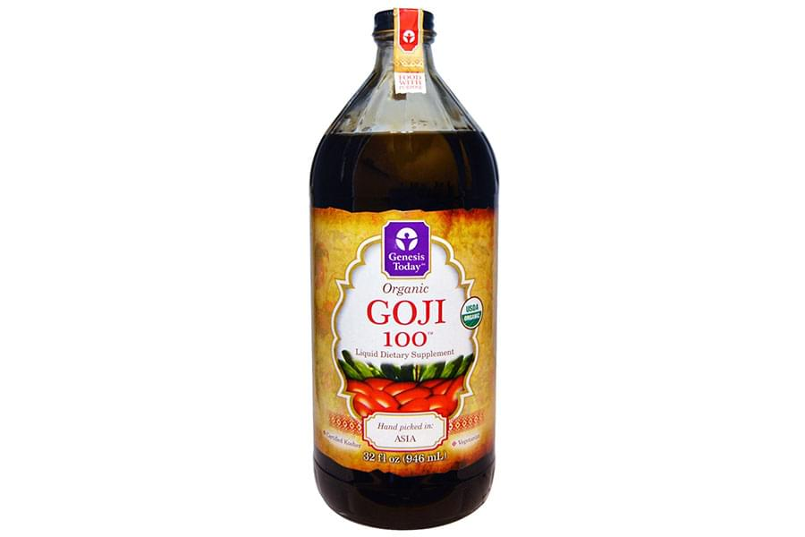
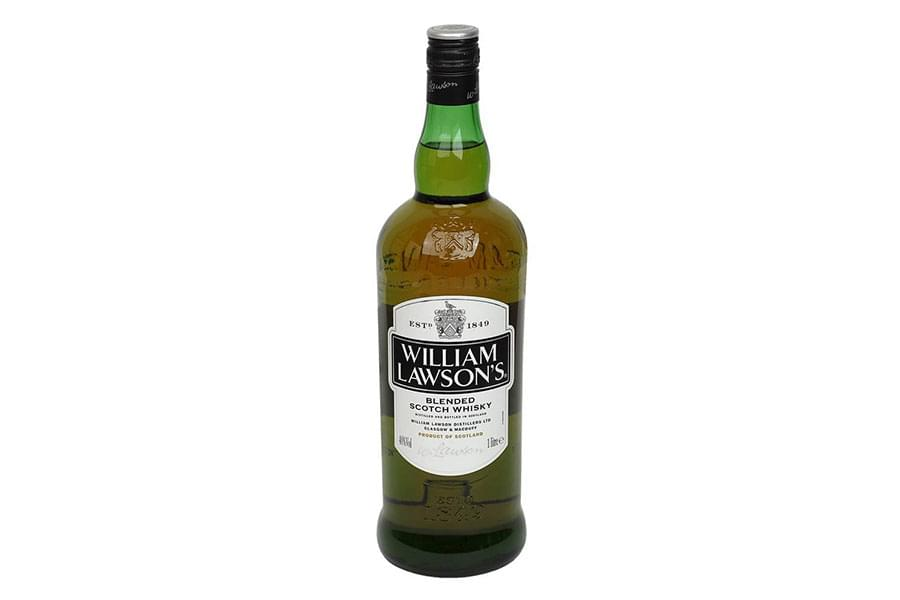

<!--#set var="title" value="Самоклеящаяся этикетка • НекстПринт" -->
<!--#include virtual="/parts/header.html" -->
<section class="brand">
    <div class="container">
        <div class="title title_sticky"><h3>Самоклеящаяся этикетка</h3></div>
        <div class="swiper-container mySwiper">
            <div class="swiper-wrapper">
              <div class="swiper-slide">
                <a data-fancybox="gallery" data-src="images/dist/sticky-label-1.jpg">
                    
                </a>
              </div>
              <div class="swiper-slide">
                <a data-fancybox="gallery" data-src="images/dist/sticky-label-2.jpg">
                    
                </a>
              </div>
              <div class="swiper-slide">
                <a data-fancybox="gallery" data-src="images/dist/sticky-label-3.jpg">
                    
                </a>
              </div>
              <div class="swiper-slide">
                <a data-fancybox="gallery" data-src="images/dist/sticky-label-4.jpg">
                    
                </a>
              </div>
              <div class="swiper-slide">
                <a data-fancybox="gallery" data-src="images/dist/sticky-label-5.jpg">
                    
                </a>
              </div>
              <div class="swiper-slide">
                <a data-fancybox="gallery" data-src="images/dist/sticky-label-6.jpg">
                    
                </a>
              </div>
            </div>
            <div class="swiper-pagination"></div>
            <div class="swiper-button-prev"></div>
              <div class="swiper-button-next"></div>
        </div>
        <p>
            <strong>Самоклеящиеся этикетки</strong> – самоклейки, стикеры, наклейки – все чаще применяются для оформления разнообразных товаров, порой успешно заменяя “сухие” этикетки. Это происходит в силу изменений рынка потребительских товаров, поскольку флексографическая технология печати самоклеек и изготовления наклеек имеет неоспоримые преимущества:
        </p>
        <ul>
            <li><i class="fa fa-check"></i><h5>широчайший спектр поверхностей, на которые можно поместить самоклеящуюся этикетку;</h5></li>
            <li><i class="fa fa-check"></i><h5>разнообразные возможности по отделке этикеток при изготовлении;
            </h5></li>
            <li><i class="fa fa-check"></i><h5>большая производительность при печати на самоклеящихся материалах;</h5></li>
            <li><i class="fa fa-check"></i><h5>дешевизна этикетировочного оборудования по сравнению с аппликаторами “сухой” этикетки;</h5></li>
            <li><i class="fa fa-check"></i><h5>возможность быстрой переналадки этикетировочной линии при переходе на новые размеры и материал самоклеящихся этикеток.</h5></li>
        </ul>
        <p>
            Для привлечения внимания покупателей товар не только должен быть высокого качества, но и обладать визуальной притягательностью. Яркие оригинальные самоклеящиеся этикетки, этикетки в рулонах и самоклеящиеся стикеры в полной мере реализуют это требование. Они удобны в применении, демократичны по стоимости, позволяют реализовать любые дизайнерские задумки благодаря возможностям многокрасочной печати УФ-лакирования или ламинации, холодного или горячего тиснения. А нанесение на самоклеющиеся этикетки штрихкодов придаст этикеткам дополнительную функциональность.
        </p>
        <p>
            Компания <strong>“Некст Принт”</strong> предлагает своем клиентам самоклеящуюся этикетку на различных материалах различной сложности отделки:
        </p>
        <ul>
            <li><i class="fa fa-check"></i><h5>обычная этикетка на бумаге с постоянным и съемным клеем;</h5></li>
            <li><i class="fa fa-check"></i><h5>самоклеящаяся этикетка на полипропилене, белый, металлизированный, прозрачный;</h5></li>
            <li><i class="fa fa-check"></i><h5>самоклеящаяся этикетка на саморазрушающихся материалах;</h5></li>
            <li><i class="fa fa-check"></i><h5>термо и термотрансферные этикетки;</h5></li>
            <li><i class="fa fa-check"></i><h5>этикетки с песонализацией.</h5></li>
        </ul>
    </div> 
</section>
<!--#include virtual="/parts/consultation.html" -->
<!--#include virtual="/parts/footer.html" -->